第12讲 · 一元函数积分学的应用（三）——物理应用与经济应用
据《张宇考研数学基础30讲·高等数学分册（2026版）》整理 · 覆盖原书 P341–P347
本讲导读
全书最短的一讲，考什么分得清清楚楚：数一、数二考物理应用——变力沿直线做功、抽水做功、静水压力、引力；数三考经济应用——由边际量还原总量、求平均值。题型上选择、填空、解答都出过，重难点是静水压力（仅数一、数二）。整讲其实只有一个思想：微元法，套路固定成三步——建系、取微元、积分。物理那四个公式不用死背，记住"微元 = 力 × 位移""压力 = 压强 × 微面积"都能现场推出来；经济应用基本就是牛顿–莱布尼茨公式的换皮。数三可以跳过物理块，数一数二可以跳过经济块，但三步走的思想两边都得练熟。
站注·真题大数据：本讲属第三梯队——近 15 年真题里出现 5–8 次，但一考就是 10 分起步的大题；数一数二卷面出做功、静水压力、引力，数三卷面出经济应用（现值、流量一类也考过）。复习优先级可以排在极限、积分计算这些一梯队之后，但模板必须考前专门过一遍，别让这 10 分裸奔。
知识框架
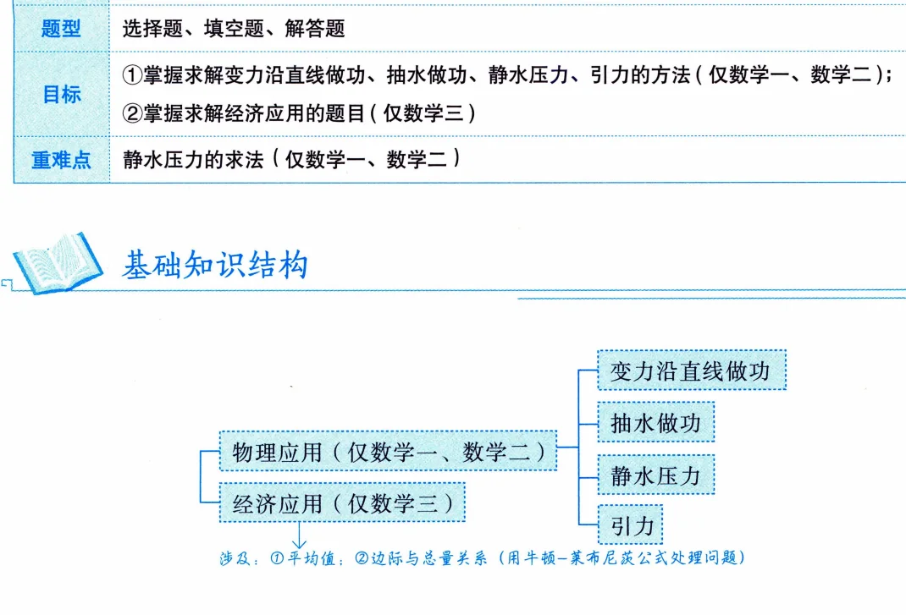
- 物理应用（仅数一、数二）
- 变力沿直线做功
- 公式：\(W=\int_a^b F(x)\,\mathrm{d}x\)，微元 \(\mathrm{d}W=F(x)\,\mathrm{d}x\)
- 模型：阻力正比深度（例 12.1 铁钉）、弹簧力
- 抽水做功
- 公式：\(W=\rho g\int_a^b xA(x)\,\mathrm{d}x\)
- 关键：用几何比例写出水深 \(x\) 处截面面积 \(A(x)\)
- 陷阱：抽到原水面上方 \(h\) 处时，位移是 \(h-x\) 不是 \(x\)
- 静水压力（重难点）
- 公式：\(P=\rho g\int_a^b x[f(x)-h(x)]\,\mathrm{d}x\)
- 微元：压强 \(\rho gx\) × 窄条面积（宽 × \(\mathrm{d}x\)）
- 关键：写出水深 \(x\) 处的板宽 \(f(x)-h(x)\)
- 引力
- 公式：\(F=\displaystyle\int_{-l}^{0}\frac{Gm\mu}{(a-x)^2}\,\mathrm{d}x=\frac{Gm\mu l}{a(a+l)}\)
- 微元：一小段棒当质点，距离 \(a-x\)
- 经济应用（仅数三）
- 边际与总量（本质：牛顿–莱布尼茨公式）
- \(C(Q)=\int_0^Q C'(t)\,\mathrm{d}t+C_0\)，固定成本单独加
- \(R(Q)=\int_0^Q R'(t)\,\mathrm{d}t\)，\(R(0)=0\) 没有常数项
- 平均值
- \(\bar y=\dfrac{1}{b-a}\int_a^b f(x)\,\mathrm{d}x\)
- 平均单位收入：\(\bar R=\dfrac{1}{Q}\displaystyle\int_0^Q R'(a)\,\mathrm{d}a\)
- 综合大题模板（例 12.4）
- 边际积分还原 \(C\)、\(R\)；弹性分离变量还原需求函数，初始条件定常数
- \(L=R-C\)，\(L'=0\)、\(L''<0\) 定最大利润
- 通用三步（物理、经济两边共用）
- 建系：原点放水面或容器口，铅直轴向下为正，让"深度 = 坐标"
- 取微元：坐标 \(x\) 处取厚度 \(\mathrm{d}x\) 的一层/一段/一条，按均匀的算
- 积分：积分限 = 微元坐标跑过的范围
核心概念与定理
一、微元法总纲：建系 → 取微元 → 积分
本讲所有物理公式都是同一个套路的产物，先立套路再记公式。第一步建系：原点放在水面、容器口或受力起点上，铅直轴一律向下为正（例 12.2 的口径叫"对称、高为正"），让"深度 = 坐标"，微元里就不出负号。第二步取微元：在坐标 \(x\) 处取厚度（或长度）为 \(\mathrm{d}x\) 的一层水、一小段棒、一条窄板，把它当作均匀的——这一小块里深度不变、力不变、压强不变，用初等公式（功 = 力 × 位移，压力 = 压强 × 面积，万有引力两质点公式）写出对应的量，就是微元。第三步积分：积分限就是微元坐标跑过的范围。经济应用没有"取微元"这一步，直接用牛顿–莱布尼茨公式在边际（导数）与总量（原函数）之间来回翻译——基础知识结构里那句"边际与总量关系（用牛顿–莱布尼茨公式处理问题）"就是原书自己点的题（印P341）。
单位先挂个号：物理题长度常给 cm、密度给 \(\mathrm{kg/m^3}\)，动笔前统一成 m；功最后落 J，大数习惯写 kJ；经济量的"万元、件"全程带着走，别在半路约掉。
二、变力沿直线做功
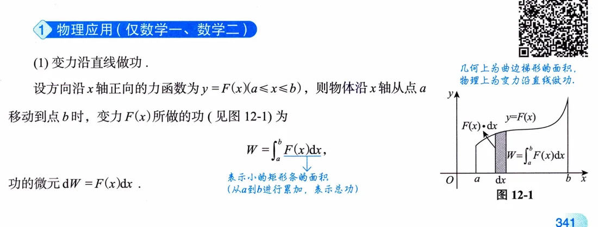
方向沿 \(x\) 轴正向的力 \(F(x)\) 把物体从 \(a\) 推到 \(b\)，所做的功
\[ W=\int_a^b F(x)\,\mathrm{d}x,\qquad \mathrm{d}W=F(x)\,\mathrm{d}x . \]
微元这样取：物体走到坐标 \(x\) 处时，再挪 \(\mathrm{d}x\) 这一小段，力几乎没变，就取当地的 \(F(x)\)，功的微元 = 力 × 这一小段位移；积分限 \(a\) 到 \(b\) 就是起点、终点的坐标。几何上 \(W\) 就是曲线 \(y=F(x)\) 下的曲边梯形面积——上一讲面积公式的物理马甲。最常见的两个 \(F(x)\)：弹簧的胡克定律 \(F=kx\)，阻力正比深度 \(f=kx\)（例 12.1）。
三、抽水做功
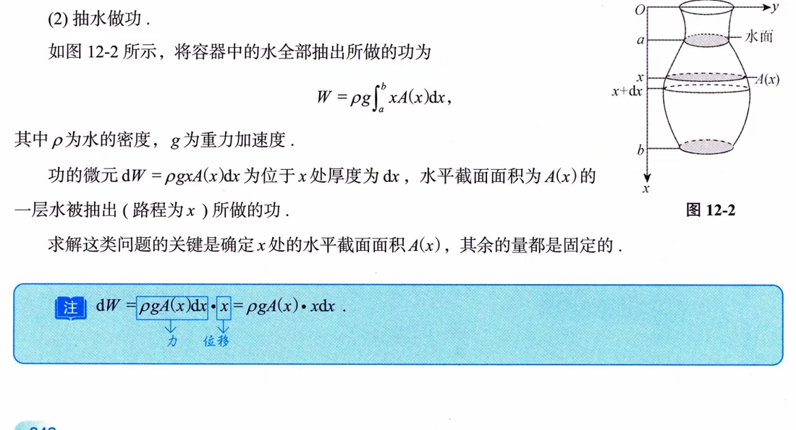
把容器中的水全部抽到容器顶部出口：
\[ W=\rho g\int_a^b xA(x)\,\mathrm{d}x, \]
其中 \(\rho\) 为水的密度，\(g\) 为重力加速度，\(A(x)\) 是水深 \(x\) 处的水平截面面积。微元 \(\mathrm{d}W=\rho gA(x)\,\mathrm{d}x\cdot x\)：\(\rho gA(x)\,\mathrm{d}x\) 是厚度 \(\mathrm{d}x\) 那层薄水片的重力（力），\(x\) 是它被抽到顶部要走的路程（位移），书上特意用框标出这个"力 × 位移"结构。整类题只有一处要动脑：把 \(A(x)\) 用几何比例写出来——倒圆锥用相似三角形、半球池用勾股定理；其余的量全是固定的。注意积分限是"水所在的深度范围"，从液面坐标积到容器底坐标。
四、静水压力（重难点）
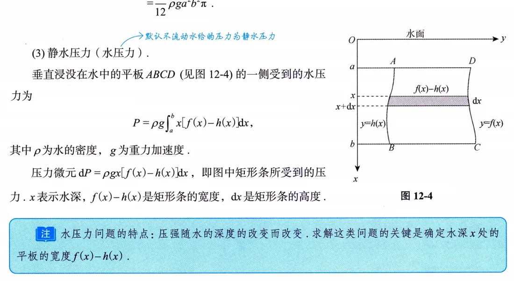
垂直浸没在水中的平板 \(ABCD\) 一侧受到的水压力
\[ P=\rho g\int_a^b x[f(x)-h(x)]\,\mathrm{d}x, \]
微元 \(\mathrm{d}P=\rho gx[f(x)-h(x)]\,\mathrm{d}x\)：\(x\) 是水深，\(\rho gx\) 是该深度的压强，\(f(x)-h(x)\) 是水深 \(x\) 处矩形条的宽度，\(\mathrm{d}x\) 是条的高度，压强 × 微面积再累加。为什么必须积分：压强 \(\rho gx\) 随深度线性变，不能拿"压强 × 总面积"一步算。书上的注也点明了——这类问题的关键就是确定水深 \(x\) 处平板的宽度（印P343）。建系照例是原点放水面、铅直轴向下（例 12.3 里轴叫 \(y\)，一回事）；等腰图形先求半宽再加倍，比硬算整宽稳。
五、引力
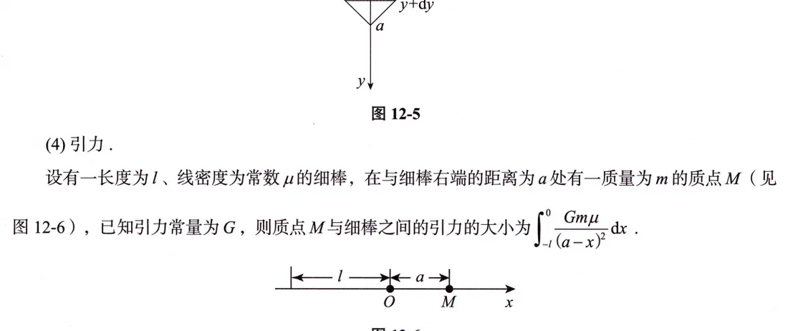
长 \(l\)、线密度为常数 \(\mu\) 的细棒放在 \([-l,0]\)，质量为 \(m\) 的质点 \(M\) 在棒右端右侧距离 \(a\) 处，引力常量为 \(G\)，则引力大小
\[ F=\int_{-l}^{0}\frac{Gm\mu}{(a-x)^2}\,\mathrm{d}x=Gm\mu\Big(\frac{1}{a}-\frac{1}{a+l}\Big)=\frac{Gm\mu l}{a(a+l)} . \]
思路是把棒切成小段：坐标 \(x\) 处取长 \(\mathrm{d}x\) 的一段，质量 \(\mu\,\mathrm{d}x\)，近似当质点，到 \(M\) 的距离是 \(a-x\)（所以分母是 \((a-x)^2\) 而不是 \(x^2\)），微元 \(\mathrm{d}F=\dfrac{Gm\mu\,\mathrm{d}x}{(a-x)^2}\) 再从 \(-l\) 积到 \(0\)——积分限就是棒两端的坐标。结果可以拿极端情形自检：\(a\to\infty\) 时 \(F\to Gm\mu l/a^2\)（整棒缩成一个质点），量纲和趋势都对。这块考得少，但"切段—近似—累加"的微元法味道最纯正。
六、边际与总量：牛顿–莱布尼茨换皮（仅数三）
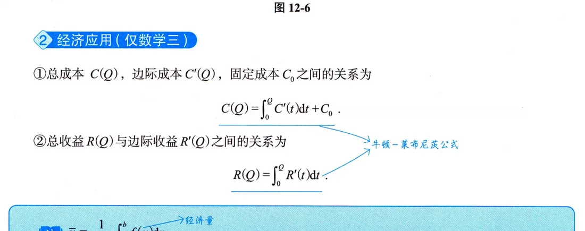
两条总量还原公式（本质是牛顿–莱布尼茨公式，原书基础知识结构原话）：
\[ C(Q)=\int_0^Q C'(t)\,\mathrm{d}t+C_0,\qquad R(Q)=\int_0^Q R'(t)\,\mathrm{d}t . \]
积分下限取 0、上限取销量 \(Q\)，意思是"从 0 件累加到 \(Q\) 件"。成本公式要单独加固定成本 \(C_0\)，积分只还原"随产量变动的部分"；收益没有这一项——一件不卖收入为零，\(R(0)=0\)。反过来读，边际就是总量的导数：\(R'(Q)\) 的经济意义是销量为 \(Q\) 时再多卖一件，收益大约增加 \(R'(Q)\)（习题 12.4 里这个数是 80 万元）。
七、平均值与平均单位收入（仅数三）
连续量在 \([a,b]\) 上的平均值
\[ \bar y=\frac{1}{b-a}\int_a^b f(x)\,\mathrm{d}x, \]
几何上是"与曲边梯形同底等面积的矩形的高"。"平均单位收入"= 总收入 ÷ 销量，用的就是它：先积分还原总收入，再除以件数，
\[ \bar R=\frac{1}{Q}\int_0^Q R'(a)\,\mathrm{d}a . \]
注意它不是把边际值代个平均销量进去——边际是导数，平均是积分再除区间长，两者差着一整个牛顿–莱布尼茨。
典型例题精讲
例 12.1 变力做功：铁钉击板（数一数二，印P342）
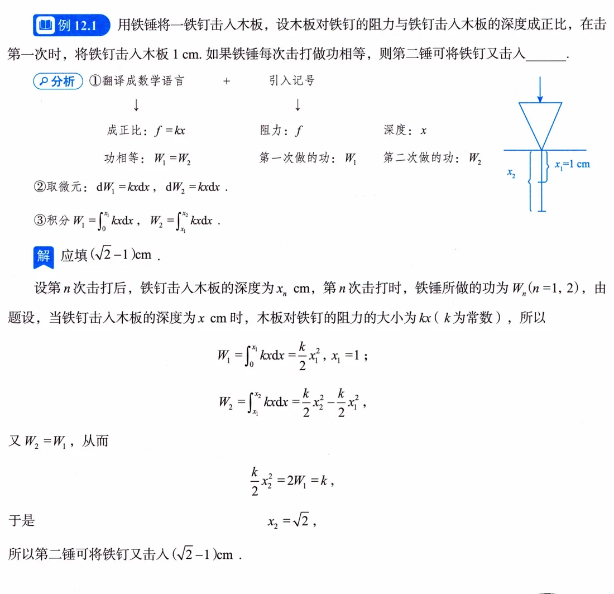
思路 阻力与深度成正比，翻译成记号 \(f=kx\)；"每次击打做功相等"就是 \(W_1=W_2\)。张宇在分析框里给的就是标准流程：①翻译成数学语言并引入记号（成正比 \(\to f=kx\)，功相等 \(\to W_1=W_2\)）→ ②取微元 \(\mathrm{d}W=kx\,\mathrm{d}x\) → ③积分。第一锤把钉子从 0 打到 \(x_1=1\)（cm），\(W_1=\int_0^{1}kx\,\mathrm{d}x=\dfrac{k}{2}\)；第二锤从 1 打到 \(x_2\)，\(W_2=\int_1^{x_2}kx\,\mathrm{d}x=\dfrac{k}{2}x_2^2-\dfrac{k}{2}\)。令 \(W_2=W_1\) 得 \(\dfrac{k}{2}x_2^2=k\)，即 \(x_2=\sqrt2\)。
要点 应填 \((\sqrt2-1)\,\mathrm{cm}\)。两段积分共享同一个被积函数，差别只在积分限——这正是"积分限 = 物体走过的区间"的直接体现。
注 问的是"又击入多少"（\(x_2-x_1\)），不是"击到多深"（\(x_2\)），这里容易绕，审错就白算。
例 12.2 抽水做功：倒圆锥容器（数一数二，印P343）
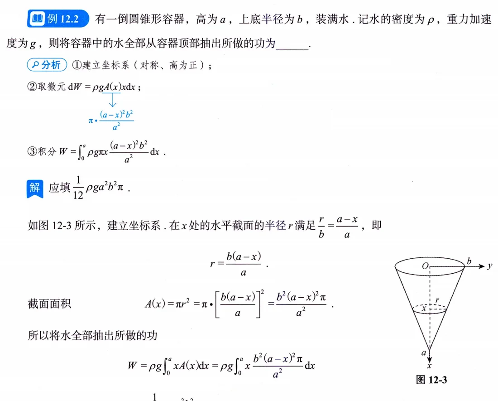
思路 高为 \(a\)、上底半径为 \(b\) 的倒圆锥装满水，从顶部全部抽出。分析框三步：①建立坐标系（对称、高为正）——原点放上底开口中心、\(x\) 轴沿对称轴向下，锥尖在 \(x=a\)；②取微元 \(\mathrm{d}W=\rho gA(x)x\,\mathrm{d}x\)；③积分。水深 \(x\) 处的截面半径由相似三角形比例 \(\dfrac rb=\dfrac{a-x}{a}\) 给出（水面处半径 \(b\)、锥尖处 0，线性内插），即 \(r=\dfrac{b(a-x)}{a}\)，于是
\[ A(x)=\pi r^2=\pi\Big[\frac{b(a-x)}{a}\Big]^2=\frac{b^2(a-x)^2\pi}{a^2}. \]
要点 水的深度范围是 \([0,a]\)，代入抽水公式：
\[ W=\rho g\int_0^a x\cdot\frac{b^2(a-x)^2\pi}{a^2}\,\mathrm{d}x=\frac{\rho g b^2\pi}{a^2}\int_0^a x(a-x)^2\,\mathrm{d}x=\frac{1}{12}\rho ga^2b^2\pi . \]
（\(\int_0^a x(a-x)^2\,\mathrm{d}x\) 展开后得 \(\dfrac{a^4}{12}\)。）
注 建系口径书上写的是"对称、高为正"——让深度直接等于坐标，微元里就不出现负号。
例 12.3 静水压力：等腰直角三角形板（数一数二，印P343–344）
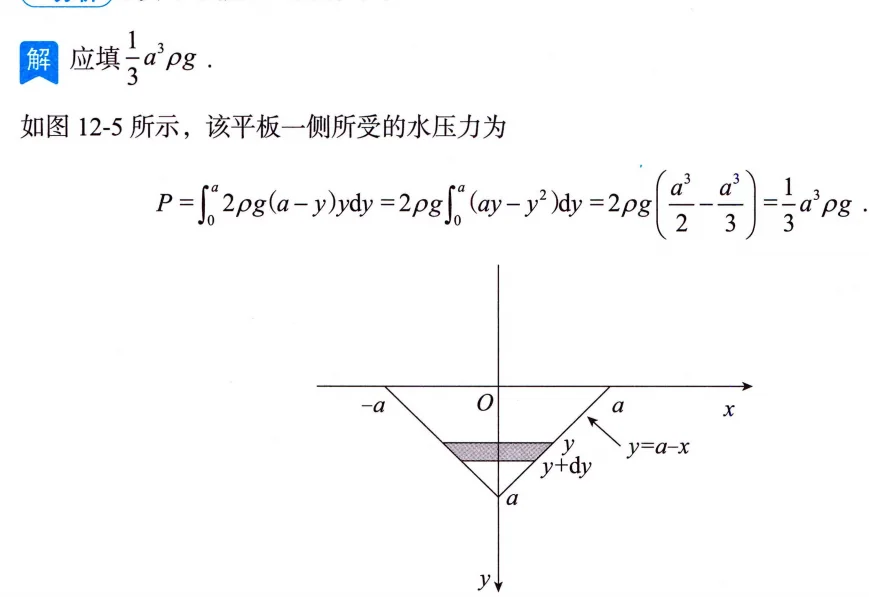
思路 斜边长 \(2a\) 的等腰直角三角形平板铅直沉入水中，斜边与水面相齐。分析就一句："建系、取微元、再积分即可"——原点放斜边中点，\(y\) 轴铅直向下。直角顶点在深处，侧边是直线，水深 \(y\) 处的半宽由侧边方程解出 \(x=a-y\)，板宽加倍得 \(2(a-y)\)。
要点 压力微元 = 压强 × 窄条面积：\(\mathrm{d}P=\rho g\,y\cdot 2(a-y)\,\mathrm{d}y\)，\(y\) 从 0（水面）到 \(a\)（直角顶点深度），故
\[ P=\int_0^a 2\rho g(a-y)y\,\mathrm{d}y=2\rho g\Big(\frac{a^3}{2}-\frac{a^3}{3}\Big)=\frac{1}{3}a^3\rho g, \]
应填 \(\dfrac{1}{3}a^3\rho g\)。
注 本题把"关键是确定水深处板宽"演示得明明白白：积分框架是免费的，全部计算量都在写宽度那一行。
例 12.4 经济综合：边际 + 弹性 + 利润（数三，印P344–345）
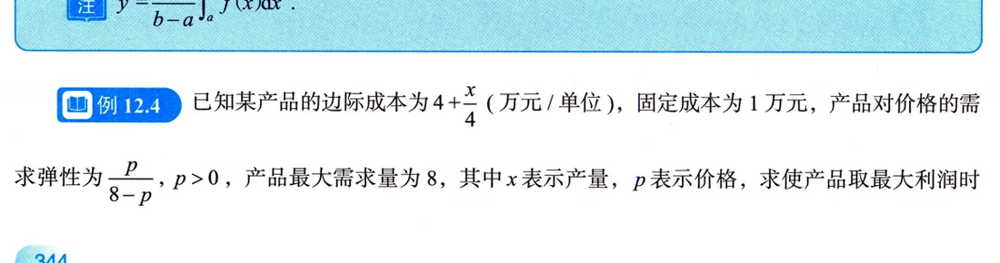
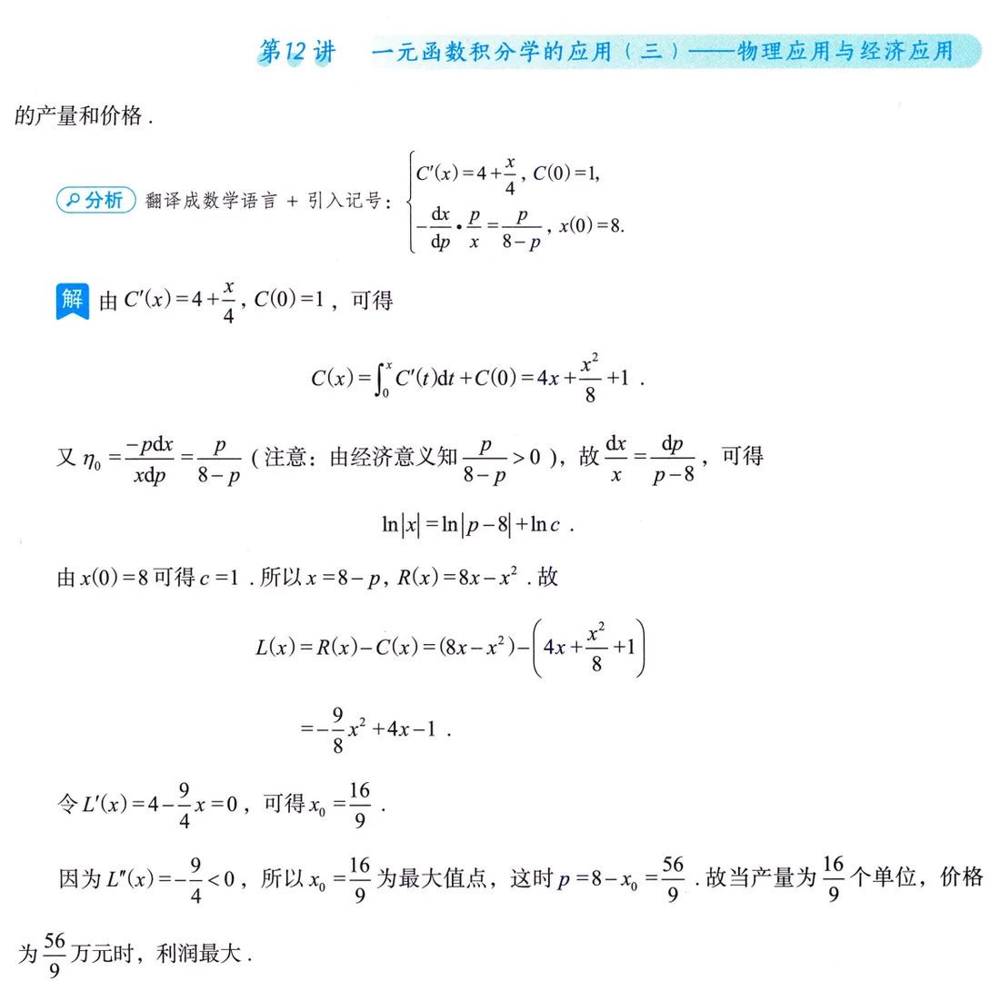
思路 边际成本 \(C'(x)=4+\dfrac{x}{4}\)，固定成本 1 万元，需求价格弹性 \(\eta_0=-\dfrac{\mathrm{d}x}{\mathrm{d}p}\cdot\dfrac{p}{x}=\dfrac{p}{8-p}\)，最大需求量 8，问利润最大时的产量与价格。分析框先摆记号框架（\(C'(x)\) 与 \(C(0)=1\)、弹性方程与 \(x(0)=8\)），然后三件套逐个上：
- 边际成本还原总成本：\(C(x)=\int_0^x C'(t)\,\mathrm{d}t+C(0)=4x+\dfrac{x^2}{8}+1\)。
- 弹性还原需求函数：由 \(\eta_0=-\dfrac{p}{x}\cdot\dfrac{\mathrm{d}x}{\mathrm{d}p}=\dfrac{p}{8-p}\)（经济意义保证 \(\dfrac{p}{8-p}>0\)）整理出 \(\dfrac{\mathrm{d}x}{x}=\dfrac{\mathrm{d}p}{p-8}\)，积分得 \(\ln|x|=\ln|p-8|+\ln c\)；由 \(x(0)=8\) 定出 \(c=1\)，取 \(x=8-p\)，从而 \(R(x)=px=8x-x^2\)。
- 利润 \(L(x)=R(x)-C(x)=-\dfrac{9}{8}x^2+4x-1\)，令 \(L'(x)=4-\dfrac94x=0\) 得 \(x_0=\dfrac{16}{9}\)，\(L''(x)=-\dfrac94<0\) 确认最大。
要点 当产量 \(x=\dfrac{16}{9}\) 个单位、价格 \(p=8-x_0=\dfrac{56}{9}\)（万元）时利润最大。
注 "产品最大需求量为 8"不是废话，它是定积分常数 \(c\) 的初始条件 \(x(0)=8\)；弹性方程本质是可分离变量的微分方程——这是 L15 会正式学的内容，这里先用分离变量硬解。
易错点与技巧
- 铁钉题审题：问的是"又击入"（\(x_2-x_1\)），不是"击到多深"（\(x_2\)）——例 12.1 答案是 \(\sqrt2-1\) 而非 \(\sqrt2\)（印P342）。
- 抽水做功的"位移"逐层不同：从顶部抽，深 \(x\) 处那层走 \(x\)；若抽到原水面上方 6 m（习题 12.3 半球池），深 \(y\) 处那层只走 \(6-y\)。微元永远是 力 × 这一层自己的路程（印P342、P347）。
- \(A(x)\) 全靠几何比例，别硬算：倒圆锥用相似三角形 \(\dfrac rb=\dfrac{a-x}{a}\)（例 12.2），半球池用圆内勾股 \(r^2=4^2-y^2\)（习题 12.3）。建系后先画截面图，比例关系一眼一个（印P343、P346–347）。
- 静水压力千万别"平均压强 × 总面积"一步算完——压强随深度变，必须积分；全题的活儿只在写出水深 \(x\) 处的板宽 \(f(x)-h(x)\)（印P343）。
- 三角形板的板宽先算"半宽"：等腰图形关于中心线对称，例 12.3 先由侧边直线解出半宽 \(a-y\) 再加倍成 \(2(a-y)\)，比硬算整宽稳（印P344）。
- 建系默认姿势：铅直轴向下为正、原点放水面或容器口，让"深度 = 坐标"。例 12.2、例 12.3 都这么干，微元里不出现负号（印P343）。
- 经济题固定成本别丢：\(C(Q)=\int_0^Q C'(t)\,\mathrm{d}t+C_0\)，积分只还原变动部分；收益没有这项，\(R(0)=0\)（印P344）。
- 弹性定义带负号：\(\eta=-\dfrac{p}{x}\cdot\dfrac{\mathrm{d}x}{\mathrm{d}p}\)，漏了负号积分就差一个符号；积分完必须用初始条件（最大需求量）定常数——例 12.4 的 \(x(0)=8\)、习题 12.4 的 \(Q(0)=1200\) 都是干这个用的（印P345、P347）。
- "平均单位收入"是 \(\bar R=\dfrac{1}{Q}\displaystyle\int_0^Q R'(a)\,\mathrm{d}a\)，不是把边际值直接代进去。习题 12.2：\(\bar R=\dfrac{1}{2000}\displaystyle\int_0^{2000}\Big(200-\dfrac{a}{50}\Big)\mathrm{d}a=180\)（印P346）。
- 答案单位自查：功落 J/kJ（习题 12.3 约 9847 kJ），压力落 N，经济量落"万元/件"（习题 12.4 边际收益 80 万元）；题干专门给 \(\rho=1000\ \mathrm{kg/m^3}\)、\(g=9.8\)、\(\pi=3.14\)，就是要你交数值（印P346–347）。
考点与方法补充（站注）
- 站注·真题大数据（考频定位）：本讲属第三梯队——近 15 年出现 5–8 次，但一考就是大题 10 分+；数一数二卷面主力是做功与静水压力，引力偶发；数三卷面是经济应用，"现值/流量"型（连续复利折现）在真题里也出现过，基础阶段先把本书的边际—总量—弹性链条练熟，现值类留到强化阶段补。
- 站注（三步走是全讲骨架）："建系 → 取微元 → 积分"不是站注自造的总结，是原书三个例题分析框的三次复写：例 12.1"①翻译成数学语言 + 引入记号"、例 12.2"①建立坐标系（对称、高为正）②取微元 ③积分"、例 12.3"建系、取微元、再积分即可"（印P342–344）。考场上想不起公式就现场推：功 = 力 × 位移、压力 = 压强 × 微面积，微元一列公式自来。
- 站注（与 L7 衔接）：需求弹性在 L7（微分学的经济应用）里用导数定义引入，本讲把它倒过来用——分离变量、积分、还原需求函数（例 12.4）；两讲合起来才是经济应用的完整闭环。经济类同学 L7 的弹性定义必须先过关，否则例 12.4 第二问直接卡死。
- 站注（与 L10 衔接）：L10 旋转体体积的"垂直轴切片"（\(\pi r^2\,\mathrm{d}x\)）与本讲抽水做功的 \(A(x)\,\mathrm{d}x\) 是同一套动作——都是先写截面再累加。数一真题里两类还常合流出题：曲线旋转出容器、再问抽水做功或侧壁压力，L10 的截面功夫直接迁移过来。
- 站注（张宇方法论）：张宇公开课反复讲"尽快结束纯听课阶段，自己动手最重要"——本讲尤其如此，微元题看着都会、下笔就卡在 \(A(x)\) 和积分限上。四个例题白纸重演一遍，比把导读再读三遍有用。
- 站注（命题趋势）：真题跨章节综合题比重上升——数三的例 12.4 一题串起边际积分（本讲）+ 弹性方程（L7/微分方程）+ 利润最值（L5），就是这种综合化的最小样本；平时练经济题就按"三件套"整组练，别拆着练。
知识清单自测
自测题
1.（液压力公式，原书习题 12.1，数一数二） 由曲线 \(y=f_1(x)\)、\(y=f_2(x)\) 及直线 \(x=a\)、\(x=b\ (a<b)\) 围成的平面板铅直地没入容重 \(r\ (r=\rho g)\) 的液体中，\(x\) 轴铅直向下，液面与 \(y\) 轴重合。求平面板所受液压力。
查看答案
解 水深 \(x\) 处取高 \(\mathrm{d}x\) 的窄条：宽 \(f_2(x)-f_1(x)\)，压强 \(rx\)，压力微元 \(rx[f_2(x)-f_1(x)]\,\mathrm{d}x\)，故
\[ F=\int_a^b rx[f_2(x)-f_1(x)]\,\mathrm{d}x . \]
即原书 12.1 选（D）。
2.（抽水做功，原书习题 12.3，数一数二） 半径 4 m 的半球形水池蓄满水，要将水全部抽到距原水面 6 m 高的水箱中，需做多少功？（\(\rho=1000\ \mathrm{kg/m^3}\)，\(g=9.8\ \mathrm{m/s^2}\)，\(\pi=3.14\)）
查看答案
解 原点放原水面、\(y\) 轴铅直向下。深 \(y\) 处截面面积 \(\pi(4^2-y^2)=\pi(16-y^2)\)，体积微元 \(\pi(16-y^2)\,\mathrm{d}y\)，重力 \(\rho g\pi(16-y^2)\,\mathrm{d}y\)，提升距离 \(6-y\)，故功的微元 \((6-y)\rho g\pi(16-y^2)\,\mathrm{d}y\)，
\[ W=\int_{-4}^{0}(6-y)\rho g\pi(16-y^2)\,\mathrm{d}y=320\pi\rho g\approx 9847\ (\mathrm{kJ}). \]
3.（平均值，原书习题 12.2，数三） 某商品销售量为 \(a\) 时边际收入 \(R'(a)=200-\dfrac{a}{50}\)，求销售量为 2000 时的平均单位收入。
查看答案
解 先积分还原总收入，再除以销量：
\[ \bar R=\frac{1}{2000}\int_0^{2000}\Big(200-\frac{a}{50}\Big)\mathrm{d}a =\frac{1}{2000}\Big(200a-\frac{a^2}{100}\Big)\Big|_0^{2000}=180 . \]
4.（弹性与边际收益，原书习题 12.4，数三） 设某商品需求量 \(Q\) 是价格 \(p\)（万元）的函数，需求价格弹性 \(\eta=-\dfrac{\mathrm{d}Q}{\mathrm{d}p}\cdot\dfrac{p}{Q}=\dfrac{p}{120-p}\)，最大需求量为 1200（即 \(p=0\) 时 \(Q=1200\)）。（1）求需求函数；（2）求总收益 \(R(Q)\) 与边际收益 \(R'(Q)\)；（3）求 \(p=100\) 万元时的边际收益，并说明其经济意义。
查看答案
解 （1）分离变量：\(\dfrac{\mathrm{d}Q}{Q}=\dfrac{\mathrm{d}p}{p-120}\)，积分得 \(\ln Q=\ln(120-p)+\ln C\)，即 \(Q=C(120-p)\)；代入 \(Q(0)=1200\) 得 \(C=10\)，故 \(Q=1200-10p\)。
（2）\(p=120-\dfrac{Q}{10}\)，故
\[ R(Q)=pQ=120Q-\frac{Q^2}{10},\qquad R'(Q)=120-\frac{Q}{5}. \]
（3）\(p=100\) 时 \(Q=1200-10\times100=200\)，\(R'(200)=120-40=80\)（万元）。经济意义：销量为 200 时再多销售一件，总收益约增加 80 万元。
5.（引力，检验性改编） 长为 \(l\)、线密度为常数 \(\mu\) 的细棒位于 \(x\) 轴的 \([-l,0]\) 上，质量为 \(m\) 的质点位于点 \(x=a\ (a>0)\) 处。写出引力的微元，求引力大小，并算出积分结果。
查看答案
解 棒上坐标 \(x\) 处取段 \(\mathrm{d}x\)，近似为质点，到质点的距离为 \(a-x\)，故 \(\mathrm{d}F=\dfrac{Gm\mu}{(a-x)^2}\,\mathrm{d}x\)，
\[ F=\int_{-l}^{0}\frac{Gm\mu}{(a-x)^2}\,\mathrm{d}x =Gm\mu\Big[\frac{1}{a-x}\Big]_{-l}^{0} =Gm\mu\Big(\frac{1}{a}-\frac{1}{a+l}\Big)=\frac{Gm\mu l}{a(a+l)}. \]